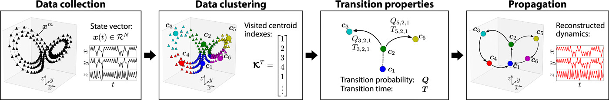

Machine learning in computational fluid dynamics - lecture 9
Andre Weiner
TU Braunschweig, ISM, Flow Modeling and Control Group

These slides and most of the linked resources are licensed under a
Creative Commons Attribution 4.0 International License.
Last lecture(s)
Analyzing coherent structures in flows displaying transonic shock buffets
- transonic shock buffets
- principal component analysis (PCA)
- ways to compute the PCA
- PCA applied to the flow around an airfoil
- dynamic mode decomposition (DMD)
- DMD applied to the flow around an airfoil
Outline
Reduced-order modeling of the flow past a cylinder
- evaluation and exam
- Reduced-order models of dynamical systems
- Grouping similar data points
- Modeling the transition between clusters
- Dealing with high-dimensional data
Course evaluation
Please, take some time for feedback:
- link to poll on StudIp - announcements
- poll open until 7th of Feb
- poll is anonymous
- your feedback matters!
- be fair and constructive
Externals: if you like, send me an email!
Course exam
- most likely oral exam, online
- poll to decide on date
Participation in the exam?
- yes
- no
- undecided
Reduced-order models of dynamical systems
What is a reduced-order model (ROM)?
- mathematical model with reduced
- computational complexity
- dimensionality
- typically a ROM
- is an approximation
- works with a reduced state
ROMs for dynamical systems
$$ \frac{\mathrm{d}\mathbf{x}}{\mathrm{d}t} = F(\mathbf{x}(t), t, ...) $$
Definition of ROMs in this lecture:
- encoding: $\tilde{\mathbf{x}} = E(\mathbf{x})$
- evolution: $\tilde{\mathbf{x}}(t) \approx f(\tilde{\mathbf{x}}, t)$
- decoding: $\hat{\mathbf{x}} = E^{-1}(\tilde{\mathbf{x}})$
$\mathbf{x}$ - full state, $\tilde{\mathbf{x}}$ - reduced state, $\hat{\mathbf{x}}$ - full state prediction
Data-driven ROMs:
ML for encoding/decoding and/or temporal evolution.
Criteria for good ROMs:
- computationally efficient
- interpretable states and dynamics
- long-term stability (extrapolation)
DMD eigenvalues computed on datasets with and without noise.
Potential issue when using DMD as ROM?
- solution vanishes/explodes
- not interpretable
- not efficient
Cluster-based ROMs
Concept of cluster-based network modeling (CNM); D. Fernex et al., source.
Grouping similar data points
Test data for clustering.
Test data for clustering without labels.
Randomly chosen initial centroids.
Randomly chosen initial centroids and cluster association.
K-means update of centroids.
Consecutive iterations of the k-means algorithm.
Recap of k-means steps:
- randomly select $k$ data points at initial centroids
- compute the distance between data points and centroids
- select the cluster id for each data point based on the closest centroid
- update each centroid based on the mean of all data points in the cluster
- repeat steps 2-4 until a stopping criterion is reached
Unfavorable selection of initial centroids.
Final centroids and cluster association with bad initialization.
Measuring the quality of the clustering - inertia:
$$ I = \sum\limits_{i=1}^N \underset{\mu_j}{\mathrm{min}}\left(||\mathbf{x}_i-\mu_j||^2\right) $$
$N$ - number of data points, $\mu_j$ - centroid/mean of all data points in cluster $j$
Influence of bad initialization on inertia:
def compute_cluster_inertia(centroids: pt.Tensor, data: pt.Tensor) -> float:
"""Compute sum of squared distances over all clusters.
"""
labels = find_nearest_centroid(centroids, data)
inertia = 0.0
for i in range(data.shape[1]):
inertia += pt.linalg.norm(data[labels==i]-centroids[i], dim=1).square().sum()
return inertia
# test
# Inertia for random initialization: 110.1418
# Inertia for bad initialization: 540.7017
Improved initialization - k-means++:
- select first centroid randomly
- compute distance between data points and centroid(s)
- select the minimum distance for each data point
- chose the next centroid randomly with probability proportional to the minimum squared distance
- repeat steps 2-4 until $k$ centroids are chosen
K-means++ - improved centroid initialization.
Comparison of random and k-means++ initialization over 100 runs.
Modeling the transition between clusters
Time series of data (state) with two features.

Clustering of time series data using 10 centroids.
Modeling of the transition time:
- determine sequence of visited centroids
- count consecutive occurrence
- remove consecutive duplicates
- compute residence time
- compute transition time as average between residence times
assumption: constant time step
Transition time example:
transition_times = compute_transition_time(cluster_ids, 2.0*np.pi/100, True)
# output
# sequence: [5 5 2 2 2 2 2 2 2 2 2 4 4 4 4 4 4 4 4 4 4 8 8 ...]
# centroid sequence: [5 2 4 8 0 9 7 3 6 1 5]
# sequential duplicates: [ 2 9 10 8 9 9 10 10 11 11 11]
transition_times
#{'5,2': 0.3455751918948773,
# '2,4': 0.5969026041820608,
# '4,8': 0.5654866776461628,
# '8,0': 0.5340707511102649,
# '0,9': 0.5654866776461628,
# '9,7': 0.5969026041820608,
# '7,3': 0.6283185307179586,
# '3,6': 0.6597344572538566,
# '6,1': 0.6911503837897546,
# '1,5': 0.6911503837897546}
Note: transition time $\approx 2\pi/k$.
Times series prediction:
def simulate(centroids: np.ndarray, transition_times: Dict[str, float],
start_id: int, end_time) -> Tuple[np.ndarray, np.ndarray]:
visited_centroids, time = [start_id], [0.0]
while time[-1] < end_time:
visited_centroids.append(get_next_cluster(visited_centroids[-1], transition_times.keys()))
transition = "{:d},{:d}".format(*visited_centroids[-2:])
time.append(time[-1] + transition_times[transition])
if time[-1] > end_time:
break
visited = np.zeros((len(time), centroids.shape[1]))
for i, ci in enumerate(visited_centroids):
visited[i] = centroids[ci]
return visited, np.array(time)
Time series prediction of network with 10 clusters.
Clustering of time series data using 20 centroids.
Problem: how to deal with uncertainty?
transition_times = compute_transition_time(cluster_ids, 2.0*np.pi/100)
transition_times
# output
# {'18,13': 0.25132741228718347,
# ...
# '10,4': 0.06283185307179587,
# '10,8': 0.3141592653589793,
# '8,18': 0.21991148575128555}
Modeling of transition probabilities:
- find all possible transitions
- count occurrences of transitions
- compute transition probability based on count
Prediction: sample next cluster randomly
Transition probability example:
# Possible next clusters: {... '4': [10, 10], '10': [4, 8], '8': [18]})
# transition probabilities
# {'18': array([[13., 1.]]),
# ...
# '4': array([[10., 1.]]),
# '10': array([[4. , 0.5],
# [8. , 0.5]]),
# '8': array([[18., 1.]])})
Time series prediction of network with 20 clusters.
Dealing with high-dimensional data
General workflow:
- encode:
map full state to reduced state - evolve:
predict time evolution of reduced state - decode:
reconstruct full state
ROM based on CNM and POD
- encode:
project time series data onto POD modes - evolve:
predict mode coefficients with CNM - decode:
inner product of modes and coefficients
Encoding with POD/SVD:
def encode(data_matrix: pt.Tensor, rank: int) -> Tuple[pt.Tensor, pt.Tensor]:
U, s, VH = pt.linalg.svd(data_matrix, full_matrices=False)
return U[:, :rank], pt.diag(s[:rank]) @ VH[:rank, :]
# the data matrix consists of 241 snapshots of the vorticity field
modes, coeff = encode(data_matrix, rank=20)
print("Mode matrix shape: ", modes.shape)
print("Coeff. matrix shape: ", coeff.shape)
Shape of mode matrix if $m$ points per snapshot, $n$ snapshots, and rank $r$ truncation?
- $m\times m$
- $m\times n$
- $m\times r$
- $n\times r$
- $r\times m$
Shape of mode coefficient matrix if $m$ points per snapshot, $n$ snapshots, and rank $r$ truncation?
- $n\times n$
- $n\times m$
- $m\times n$
- $n\times r$
- $r\times n$
Clustering of the mode coefficients:
clustering = KMeans(n_clusters=40, random_state=0)
clustering.fit(coeff.T.numpy())
centroids = clustering.cluster_centers_
print(centroids.shape)
Of how many entries/elements consists a single centroid?
- $n$
- $m$
- $r$
- $40$
Time evolution with CNM
# transition times
transition_times = compute_transition_time(clustering.labels_, dt)
# transition probabilities
centroid_sequence = remove_sequential_duplicates(clustering.labels_)
transition_probs = compute_transition_probabilities(centroid_sequence)
# time evolution
prediction, times_sim = simulate_probablisticly(
centroids, transition_probs, transition_times, clustering.labels_[0], 10)
CNM prediction of POD mode coefficients.
Reconstruction of the vorticity field:
def decode(modes: pt.Tensor, coeff: pt.Tensor) -> pt.Tensor:
"""Compute inner product of POD modes and coefficients.
"""
return modes @ coeff
# reconstruct full state
reconstruction = decode(modes, pt.from_numpy(prediction).T.type(pt.float32))
Reconstructed CNM prediction of vorticity field.